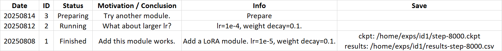

Research
Things about research.
Written by Junkun Yuan.
Click here to go back to main contents.
Table of contents ▶
A Guide to Research
Progress Management
synchronize progress
Jul 25, 2025 | progress management
- Keep progress updated. Maintain an online progress document (such as Tencent Doc, Feishu Doc, and Google Doc), share the link with your team, and update it whenever you make new progress. Example document.
- Hold regular discussions with collaborators. Share achievements, challenges, and next steps with collaborators in a timely manner. To make meetings efficient, clarify what you want to share and what team members should prepare (e.g., reading some papers in advance).
- Update progress frequently. Write concise notes on achievements and issues. Keep records clear and well-structured, ensuring quick access and review for the team. Ask yourself: (1) What should I share with the team? (2) Which results / issues are important to recall later?

Paper Review
discover an open problem
Aug 02, 2025 | paper review
- Find a research topic. Read recent papers and answer: (1) What is the value of this topic? (2) Are there any well-known researchers or institutions involved in this topic? (Selecting a topic is crucial. By aligning with veterans, one can reduce the risk of pursuing topics with limited value, especially for early-stage researchers.) Some paper sources: NeurIPS, ICLR, ICML, CVPR & ICCV & ECCV, and ACL & EMNLP.
- Find an open problem. Summarize motivations & contributions of related works and answer: (1) Is there any open problem or bottleneck in this topic? (you may summarize it based on the Future Work or Limitation section of these papers) (2) Is this problem central or just a side detail for this topic? (3) What impact will solving this problem have on this research field? Does solving it advance just the method, or the entire field?
- Find related solutions. Search for relevant solutions (in related papers) to the open problem that you find, and answer: (1) What have they solved and what have they not solved? (2) Is your idea and solution novel, or trivial / incremental / just a tweak? Keep questioning yourself.


Experiment
prepare, implement, monitor experiments
Aug 16, 2025 | experiment
- Code. Choose a suitable codebase from open-source projects related to your topic. It should be flexible, reliable, and easy to use.
- Data. Select training datasets and evaluation benchmarks, typically following those used in the most relevant works to ensure credibility. Preferably, use datasets on which the chosen codebase has already been tested by previous works.
- Reproduce baseline results. Run the codebase on the selected dataset and verify that you can reproduce the results reported in prior works. This step is very important, so ensure you can either reproduce the results or provide a well-reasoned explanation if reproduction fails.
- Implement ideas. Introduce your methods by modifying or adding as little code as possible, keeping implementation clean and transparent.
- Document experiments. Maintain an experiment log and update it whenever you start or complete a new experiment. Example document.

Write Paper
instructions for paper writing
Sep 10, 2025 | write paper
Writing a paper is the most crucial part of research. Through the paper, you tell people: "What problem are you solving, why are you solving it, how did you solve it, what are your final results and findings, and what is the significance and inspiration of your work to the research community."
There is no one-size-fits-all format for paper writing. The following guidance is based solely on my personal experience. Everyone can develop unique and creative ideas for their papers based on their own thinking/insights and the distinctiveness of each research project.
- Prepare LaTeX template. Download a LaTeX template from the official website of the target conference or journal and read the instructions carefully.
- Build online project. Maintain an online LaTeX project so collaborators can help write and polish the paper. TeXPage is recommended for users in China as Overleaf can sometimes be unstable due to heavy traffic. Upload the LaTeX template and share the project link with collaborators.
- General writing principle. Adhere to Occam's Razor—write only what is essential, and avoid irrelevant or redundant expressions. Constantly remind yourself: "If you remove this sentence, does it affect the clarity of your paper? Is there a more concise way to express the same idea?" Avoid exaggerated or false statements, as they not only damage your reputation but also give reviewers opportunities to challenge your work.
- Write while comparing and thinking. When writing, it is important to repeatedly read related works—see how they structure the full paper, how they present the ideas and methods, and what experiments they conducted. Enrich your experiments and polish your writing during this process.
- Abstract. A good abstract (about 200 words) should clearly convey: (1) The problem you address. (about 1 sentence) (2) How you solve it. (about 1 sentence) (3) High-level idea and method with important components. (about 2-3 sentences) (4) The key results achieved. (about 1 sentence) Note: avoid excessive background or motivation—reserve that for the Introduction.
- Introduction. It should cover: (1) Background of the topic. (2) Motivation of the research. (3) Motivation of your idea and method. (4) High-level overview of your method with key components. (5) Experiments with major results and findings. (6) The value of the work to this research field. (7) A brief summary of contributions (optional). Note: avoid excessive background or method details—focus on the core contributions.
- Related Works. Provide context by addressing: (1) what previous works have done; (2) what they have overlooked or left unresolved. Note: avoid listing works haphazardly; instead, thoughtfully select representative works and present them in a logical, well-organized manner.
- Method. Clearly present your proposed method by first explaining the high-level motivation and idea. An effective paper should be able to communicate its methods and results primarily through figures and tables—akin to a silent presentation—without requiring readers to scrutinize every word of the main text. Note: do not overcomplicate your method (such as overusing ineffective symbols or formulas) for sophistication's sake—clarity, simplicity, effectiveness, and scalability are key values in AI research (think about ResNet, Dropout, Mixup, YOLO, etc.).
- Experiment. This section should address: (1) Datasets / benchmarks used. (2) Implementation details sufficient for reproducibility. (3) Main results compared to relevant and strong baseline methods. (4) Ablation studies to show the role of each component. (5) In-depth visualization, analysis, and insights beyond the numbers. Note: focus on telling readers what the results mean, not just what they are.
- Conclusion. Summarize the achievements, limitations, and broader implications of this work. Highlight future directions that others can build on. Note: keep this part forward-looking, while the Abstract and Introduction focus on current contributions.
Example papers about empirical studies:
- Scaling Inference Time Compute for Diffusion Models (CVPR 2025): It explores inference-time scaling of diffusion models by introducing: (1) The background of diffusion models and the motivation of scaling; (2) How to scale via search verifiers and search algorithms; (3) Scaling performance and findings; (4) How to arrange inference compute.


Open Source
make dataset and project open source
Aug 10, 2025 | open source
- Importance of open source. Open source is essential for reproducibility, knowledge sharing, and AI innovation. An open-sourced project also serves as a visible proof of your coding skills, attracting attention to your work, and strengthening your research reputation and network.
- Code. Ensure your code is clean: (1) Remove unused files, debug prints, or personal content. (2) Use a clear directory structure (e.g., `data/`, `model/`, `train.py`). (3) Add meaningful comments. (4) Verify that releasing the code does not violate any policies. Provide a concise README, including: (1) A brief introduction. (2) Running environment and dependencies (datasets, checkpoints, etc.). (3) Training and evaluation instructions. (4) Acknowledgement of other open-source projects used. (5) Citation instructions. (6) Contribution guidelines. (7) License.
- Data. Ensure your data is clean: (1) Obtain permission to share it. (2) Remove personal information. (3) Ensure compliance with regulations if human data is involved. (4) Filter out harmful, offensive, or biased content. (5) Organize files clearly (`train/`, `val/`, `test/`). Write a concise README, including: (1) A brief introduction. (2) Instructions to download, load, and use it. (3) Known biases and risks. (4) License.
Last updated on May 22, 2026 at 21:45 (UTC-7).